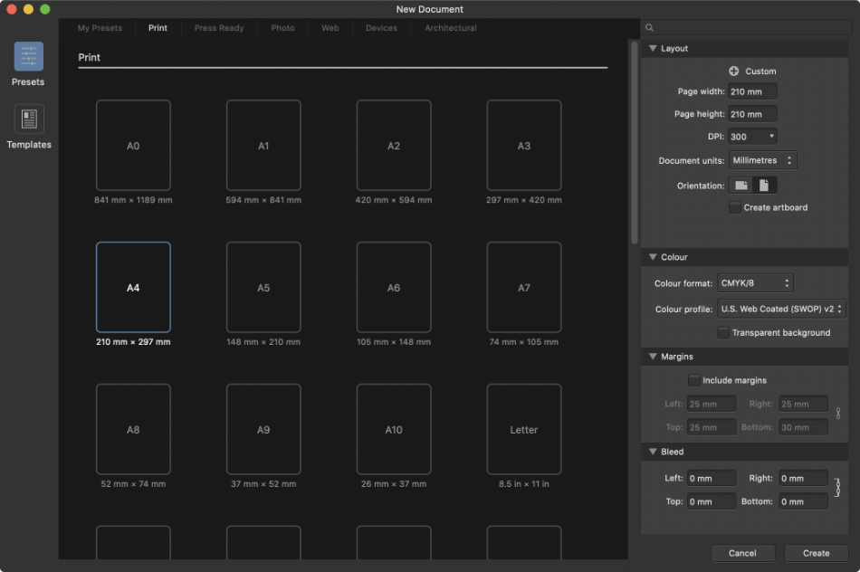

New documents can be created from presets, templates, or customized to meet your specific needs.
The New Document dialog is split into separate tabs which let you customize your current preset or apply more advanced settings.
From the left-hand side of the dialog, you can choose to work with document presets or templates. From here, you can add a new preset, set a folder for your templates, and import additional templates. Your selection here affects what will appear in all other areas of the dialog.
If you have chosen to work with presets, the top of the dialog displays document preset categories. From here, you can set the aim and deliverable for your project. As well as Print (RGB desktop printing) and Press Ready (CMYK professional printing), you can work to specific Photo print sizes, specific Web screen resolutions, Architectural drawing sizes, and with the Devices option, design to iPad, iPhone, Apple Watch, and Nexus document specifications. Your selected category will determine the presets that appear in the main area of the dialog.
The main area of the dialog displays a range of presets or templates, depending on the option you have selected from the left.
The Settings pane is available from the right hand side of the dialog, allowing you to customize your document's settings or search through available presets or templates.

The New Document dialog.
With Presets selected, the settings displayed are as follows:
For Layout:
Add New Preset—Click to save Custom settings to a new preset in My Presets category.
Preset—Displays the document preset you have selected. If you alter the settings, this will change to Custom.
Page width/height—Change these values to make a custom page size.
DPI—Sets the resolution of your document. For example, for professional print quality, set your resolution to 300 dpi.
Document units—Displays your rulers and object dimensions in pixels, points, picas or using physical measurement units.
Orientation—Select whether to display your document in a portrait or landscape orientation.
Image placement policy—Determines whether placed images or documents are to be embedded or linked in the document by default.
Create artboard—Creates an artboard with your new document.
For Color (management):
Color Format—Sets the color mode to RGB (8, 16 or 32 bit HDR), Grey (8 or 16 bit), CMYK (8 bit), or Lab (16 bit).
Color Profile—Sets the color gamut for the previously chosen color format.
Transparent background—Check to set your page background to be transparent.
For Margins:
Include Margins—Check to switch on page margins.
Left, Right, Top, Bottom—Sets the printer margins, showing as non-printable blue lines.
For Bleed:
For different bleed values at single-page edges (Facing pages unchecked): Set the Left Bleed, Right Bleed, Top Bleed, and Bottom Bleed.
For different bleed values at two-page spread edges (Facing pages checked): Set the Inner Bleed, Outer Bleed, Top Bleed, and Bottom Bleed.
For the same bleed value: Enable the Link symbol at right, and set any bleed value; all other values will update to this.
With Templates selected, the settings displayed are as follows:
Folder—Displays folders designated as template folders; you can export your document as a template (.aftemplate) to this folder using File>Export as Template.
Add Folder—Designates a folder as a template folder. Templates saved to these folders will show in the main pane.
Remove Folder—Removes the selected templates folder.
Show in Finder—Opens the selected templates folder in a new file browser window.
Show in Explorer—Opens the selected templates folder in a new file browser window.
Search—Allows you to search for existing document templates. These will be displayed in the main pane of the dialog.
Preview—Displays a larger preview thumbnail of the selected template, along with its file path (click to navigate to the file's folder location).
To create a new document:
Do one of the following:
From the Welcome screen, click New Document.
From the File menu, click New.
From the dialog, choose document settings.
Click Create.
Document presets
To make document setup quick and easy, one of several blank document presets can be chosen which group recommended document setup options according to how you plan to work.
To select a preset:
From the New Document dialog, with Presets selected from the left-hand side, click on one of the available presets.
To customize a preset:
From the New Document dialog, with Presets selected from the left-hand side, click on one of the available presets.
Edit settings in the right-hand pane to override the current preset's options. The text Custom will appear in the Page Preset box to indicate the preset has been customized.
The options will be in effect immediately.
To save a custom setup for future use:
Click the plus button adjacent to the 'Custom' text in the Settings pane.
Your custom setup will be added to My Presets.
To rename or delete a preset:
From the New Document dialog, with Presets selected from the left-hand side, click on My Presets.
-click on a custom preset and choose Rename Preset or Delete Preset.
If renaming, enter a name for your preset and click OK.
Document templates
Document templates can be set up to contain reusable text styles, graphics, and layouts, giving you a file that's ready to go from the moment you open it. From the New Document dialog, you can set up your 'target' template folders to save templates to (File>Export as Template), as well as browse, preview and search for existing document templates.